さて、イベントあれこれの浅草界隈最大のお祭り「隅田川花火大会」開催でございます。
写真の時間は4時ぐらいかな。まだ人は少なめ。普段より浴衣比率が60%UPって感じ
さて、イベントあれこれの浅草界隈最大のお祭り「隅田川花火大会」開催でございます。
写真の時間は4時ぐらいかな。まだ人は少なめ。普段より浴衣比率が60%UPって感じ
{kind=link}
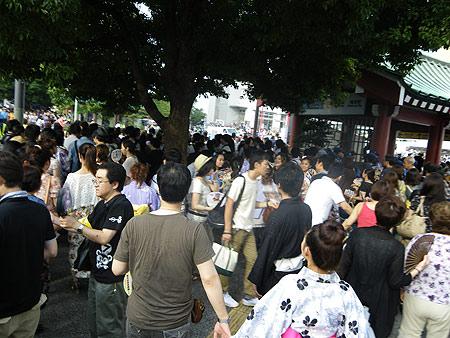
銀座線駅前。普段の土曜だとこの四分の一くらいの混雑かな。{kind=link}
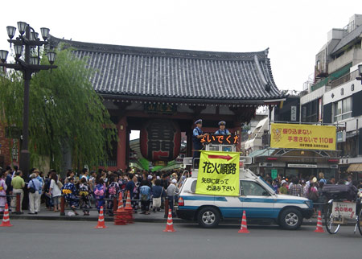
観光地住民の宿命として、混雑は慣れっこになっているんだけど、この続々と人が流入してくる感じは、なんだかわくわく！ おっす！オラ悟空！なんだかワクワクしてきた！！！！ってテンションあげあげ。 花火前に浅草寺見物に行く人も多いもよう。 花火大会デートって、恋人の定石みたいなものだから、カップル女子はみーーーんな浴衣！ 暑いし人混みだしで辛いだろうに…履き慣れない下駄をカラコロと、女子の心意気を彼氏は理解してあげてるのかなー。 しかし、衣紋を抜きすぎなコが多いなー。セクシーだけど、浴衣はきりっと着たほうが大人風味だと思うヨ！{kind=link}
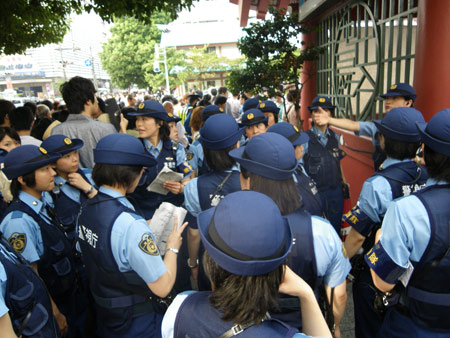
女性警官総動員。こっちはもうすこしセクシーさが欲しいなー。{kind=link}
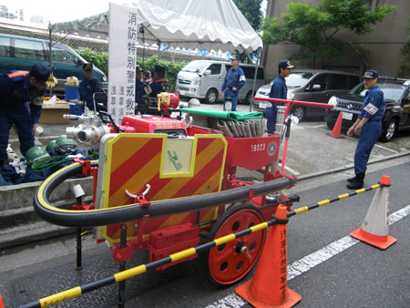
消防も出ています。いがいと燃えかすや不発弾が落ちるんだよね。{kind=link}
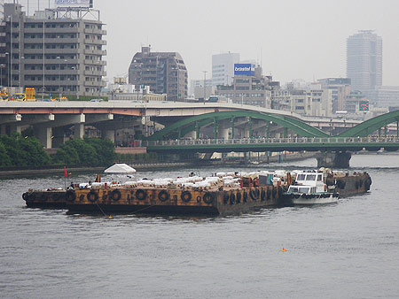
打ち上げはこちらから。{kind=link}
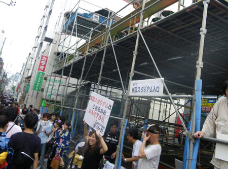
突貫工事で特設スタジアムができてた。{kind=link}
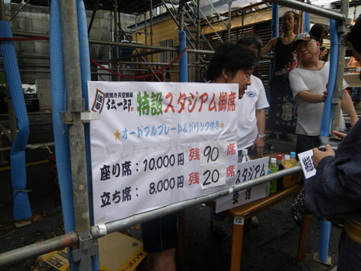
座っていちまん、立ってはっせんえんですか！ でも、近所ではフツーのマンションに入るだけでさんぜんえんっていうトコもあった。 花火経済効果。{kind=link}
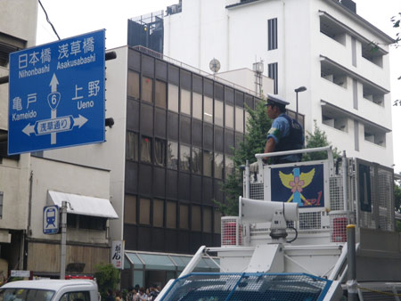
なんだかだんだん物々しくなってきている界隈。{kind=link}
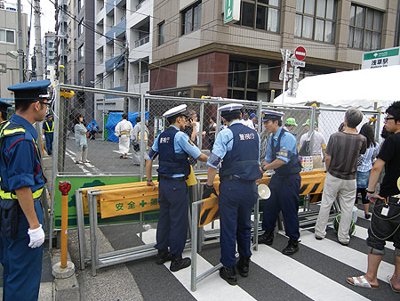
封鎖！居住者には事前にバックステージパスの配布がありました。。。{kind=link}
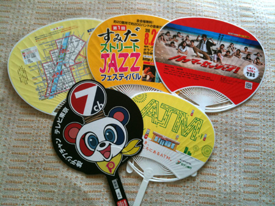
って、ひとまわりしたら、うちわが5つ とゆーわけで、花火スタート。{kind=link}
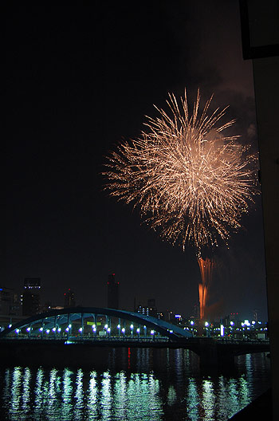
{kind=link}
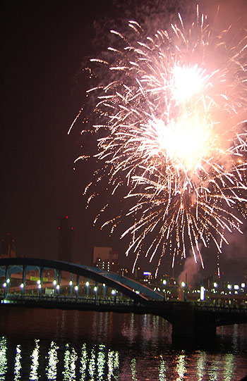
{kind=link}
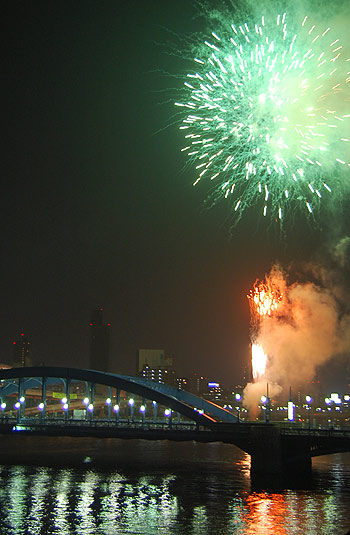

{kind=link}
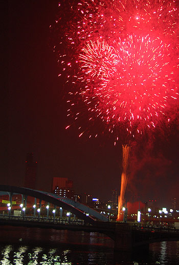
{kind=link}
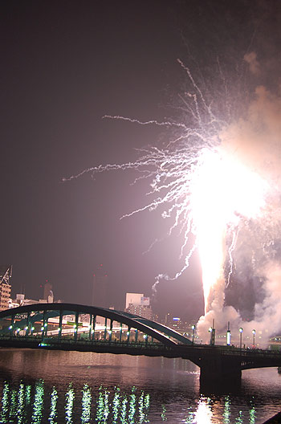
外来者で道路上で見るひとたちは、歩きながらの鑑賞になったもよう。 グループ分けして、橋をわたらせていた。ドーンドーンとゆー花火の音と、拡声器による「次の●●グループはもうしばらくお待ちくださーーーーーい！！！」「歩きながら！歩きながらの鑑賞です！写真は一枚！撮ったら移動してくださいっ！」とゆー臨場感たっぷりのアナウンスが隅田川上を響いておりました。 しかも、終了後は「浅草駅は大混雑です！！！！このまま余韻を楽しみながら上野駅まで歩いてみてはいかがでしょ！！！！」と！ 歩いたら30分ぐらいかな。浴衣と下駄が嫌いになった女子もいたんじゃなかろうか。